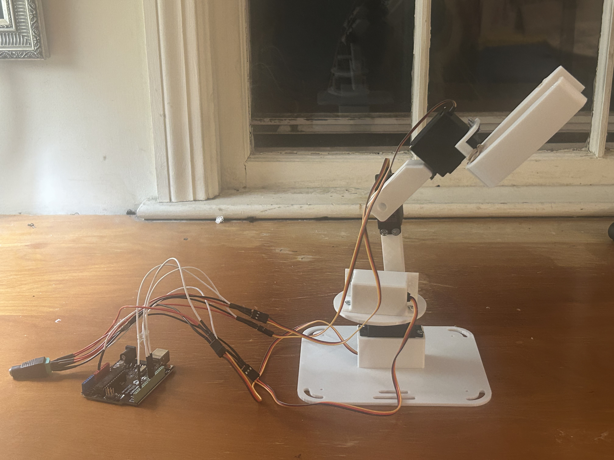

I design and build robotics systems with a focus on mechanical design, actuation, embedded control,
sensors, and computer vision. My strongest work is at the system level: turning CAD, code, electronics,
and fabrication into working robotic hardware.
My core strengths are SolidWorks robotics design, electrical integration with servos, steppers, Arduinos,
Raspberry Pis, and sensors, plus fast application development in Python for vision and control workflows.
This site is a project showcase built around real systems, not filler.
These projects are the clearest examples of how I approach robotics: design the mechanism, select the
hardware, build the control path, solve the mechanical failures, and iterate until the system works.
Featured / 01
Vision-Driven Robotic Manipulator
A 4-degree-of-freedom computer vision robotic arm built to translate live hand motion into physical
joint movement through a full software-to-hardware control chain.
This system used MediaPipe and Python for real-time hand tracking,
an Arduino for actuator control, MG996R servos for joint actuation,
and custom 3D printed structural components to create a working robotic arm capable
of mirrored motion response.
The project required coordination across computer vision, serial communication, servo control, CAD,
fabrication, and structural iteration. The main engineering limitation was insufficient holding torque
and excessive mechanical wobble under load. To improve performance, I shortened the arm length to reduce
joint moment demand and redesigned parts with stronger geometry to increase rigidity.
Designed and assembled a 4-DOF robotic arm around MG996R servo actuation
Built a Python + MediaPipe pipeline for real-time hand landmark tracking
Sent motion data from Python to Arduino for live servo position control
Modeled and iterated custom printed components to improve stiffness and reduce instability
Debugged practical robotics issues including torque limits, oscillation, wobble, and motion tuning
Python
MediaPipe
Arduino
MG996R Servos
3D Printing
SolidWorks
Primary demo video
Final arm assembly

Printed links and electronic equipment
02
Computer Vision Tracking Turret
A hand-tracking turret system built to convert visual target position into coordinated pan and tilt
motion. This project focused on responsive tracking, actuator control, and stable motion across a simpler
but more direct robotics platform.
Compared with the robotic arm, this system emphasized tracking performance, control responsiveness, and
cleaner axis isolation. It served as a strong testbed for camera-based target following, servo tuning,
and software-to-mechanical integration.
Built a vision-guided pan/tilt tracking platform for live motion following
Integrated camera input, Python processing, and microcontroller-based actuation
Tuned motion speed and update behavior to improve responsiveness without excessive jitter
Used mechanical mounting and axis layout to support repeatable directional tracking
Tracking
Servos
Python
Arduino
Control
Tracking turret demo
03
CNC End Effector
A custom end-effector project centered on robotics tooling, attachment design, and mechanical interface
quality. The main value of this build was in designing a functional mechanism that could integrate with
a larger automated system rather than exist as a standalone part.
This project emphasized geometry, mounting strategy, mechanical packaging, and design for controlled
motion. It reflects my interest in robotics beyond arms alone, especially in the hardware that gives
robots useful physical capability.
Designed a robotics-focused end effector around functional mechanical constraints
Used SolidWorks to develop attachment geometry, structure, and integration features
Focused on manufacturable design and practical system compatibility
Approached the project from a robotics tooling perspective rather than just part modeling
SolidWorks
End Effector Design
Mechanisms
Robotics Tooling
End effector overview
04
Hand-Crank Light Generator (Experimental)
A small electromechanical prototype exploring manual energy generation through mechanical input.
The system used a hand-driven crank connected to a generator with the goal of producing enough
electrical output to illuminate a light source.
Testing showed the generator required substantially higher rotational speed and torque than could
be reliably produced through direct hand cranking. Without mechanical amplification (gearing), the
system could not generate sufficient voltage to power the light consistently.
Designed and built a manual crank-driven generator system
Integrated mechanical motion with electrical generation and output wiring
Tested generator performance under human-powered input
Identified mechanical advantage and gearing as key requirements for viable power output
Hand-crank generator demo
Core Strengths
Robotics-focused skill set
My work is centered on robotics hardware and robotics system integration. I am strongest where mechanical
design, electronics, and control software meet.
Mechanical Design
SolidWorks for robotics structures, actuator layouts, custom parts, linkages, mounting strategy, and system packaging.
Electrical + Embedded
Servos, steppers, Arduinos, Raspberry Pis, sensors, wiring, power handling, and actuator integration.
Software + Vision
Python-based application development for robotics workflows, especially computer vision, control logic, and fast prototyping.